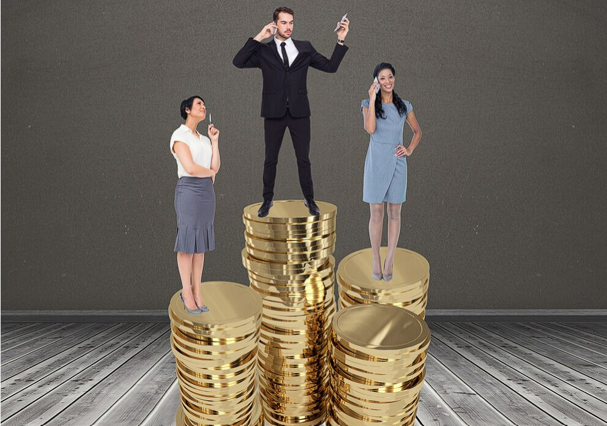
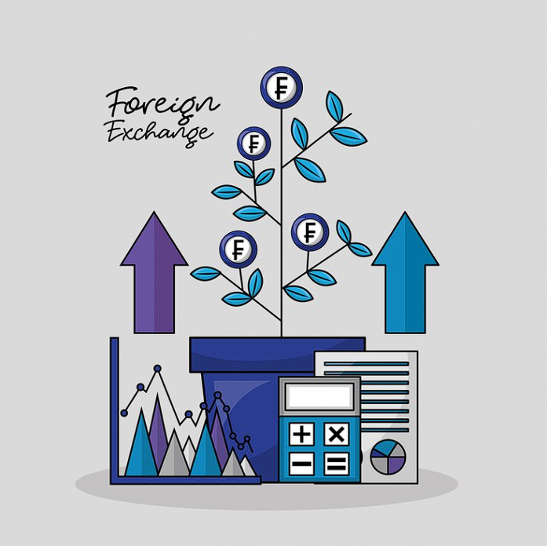

Current Solutions
-
 1. Education:
1. Education:
The government is expanding secondary education to improve the skills and employability of youth, especially in rural areas, to help break the cycle of poverty.
-
 2. Job Creation:
2. Job Creation:
The government is diversifying the economy by creating jobs outside traditional sectors like agriculture, focusing on industries such as manufacturing, services, and technology for more stable employment.
-
 3. Infrastructure Development:
3. Infrastructure Development:
Investments are being made in infrastructure projects like roads and sanitation systems to enhance the quality of life in rural areas and support economic growth.
-

4. Human Capital Investment:
The government is investing in health, education, and social protection to ensure all Filipinos can benefit from economic development, providing a safety net for vulnerable populations.
-

5. Economic Transformation:
The government is modernizing industries and promoting sectors like technology and renewable energy to create sustainable employment and a dynamic economy.
More Information
- Great strides have been made to reduce poverty in the Philippines. There is a growing middle class, a long-term decrease from 1985 in the poverty rate and more people have started to achieve economic security. All of this, in addition to the expansion of secondary education and a reduction in income inequality due to government social assistance, has created good news for the fight against poverty.
- Despite the progress, more work is necessary. The COVID-19 pandemic has turned back progress in several areas across the globe, especially in the Philippines. Between 2018 and 2021, about 2.3 million people were pushed into poverty, according to the Filipino government. This increase is due to the economic downturn that COVID-19 has caused. In 2021, the number of people living in poverty rose to almost 20 million, which is a little more than 18% of the population. That is up from 16.7% in 2018.
- The population of the middle class had ballooned to 12 million people, and the amount of the population that had become economically secure had reached 44 million people. The report highlighted more accomplishments as well, including “the expansion of secondary education, mobility towards better-paying jobs, access to basic services and government social assistance have started to reduce inequality since the mid-2000s.”